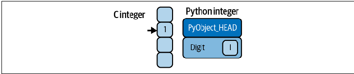
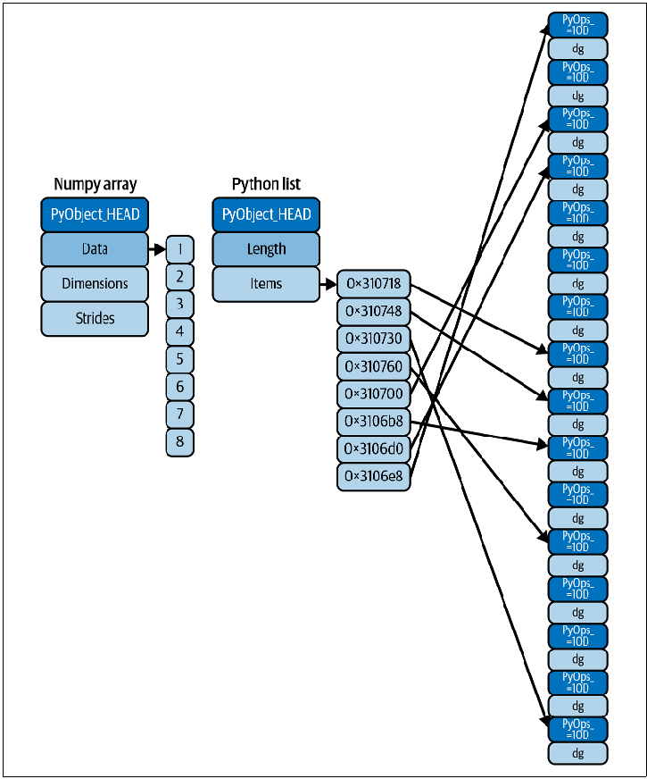

세로축
- 막대 길이가 값이면 0에서 시작합니다.
- 선 그래프 축을 자르면 최솟값과 최댓값을 함께 제시합니다.
DATA VISUALIZATION · WEEK 02
질문을 실행 가능한 파일로 연결하고, 같은 종류의 많은 숫자를 배열로 다룹니다.
질문→검증→그림의 흐름 뒤에 Python 실행과 NumPy 배열 조작을 연결합니다.
같은 입력으로 같은 결과를 만들고, dtype·shape·size와 원본 변경 여부를 예측합니다.
02 · FLOW
↖ 원본 행 수 · 자료형 · 결측치 · 단위 · 축 · 계산을 다시 대조 ↙
03 · QUESTION
종류나 집단별 값의 차이
관측 순서에 따른 변화
모인 위치와 퍼진 정도
두 값이 함께 변하는지
04 · MATCH
05 · ENCODING
06 · WRITE
두 시점 · 값 · 단위를 함께 적고, 증가·감소·차이를 그림에서 직접 확인합니다.
07 · EXECUTE
.py 파일은 입력부터 저장까지 위에서 아래로 실행됩니다.python main.py를 새 터미널에서 실행하고 종료 코드와 생성 파일을 확인합니다.
08 · REPRODUCE
원자료는 직접 수정하지 않고, README에는 설치·실행 명령과 생성 결과를 기록합니다.
project/ ├── data/raw/ ├── data/processed/ ├── src/main.py ├── output/figures/ ├── requirements.txt └── README.md
from pathlib import Path import sys import numpy as np print(sys.executable) print(sys.version.split()[0]) print(np.__version__) print(Path.cwd())
09 · ENV
10 · VERIFY
assert로 AI 코드를 설명 가능한 상태로 만듭니다.입력·계산·출력을 자신의 말로 설명
손으로 답을 아는 사례로 확인
요구 하나를 바꿔 반영 여부 확인
오류·입력·수정 내용을 남김
values = [10, 20, 30, 40] result = [value * 2 for value in values] assert result == [20, 40, 60, 80]
11 · OBJECT
x는 실행 중 정수 객체를 가리켰다가 문자열 객체를 가리킬 수 있습니다.
객체마다 자료형과 관리 정보가 있어 많은 숫자에서는 저장·반복 비용이 늘어납니다.

12 · INTEGER

13 · STORAGE
서로 다른 객체를 함께 담거나 원소 수가 자주 바뀔 때
같은 자료형의 많은 숫자에 같은 계산을 적용할 때
14 · WHY NUMPY
같은 자료형의 많은 숫자에 같은 계산을 정확하고 빠르게 적용해야 합니다.
하나의 dtype을 공유하는 NumPy 배열과 배열 전체 연산을 사용합니다.
저장 크기를 예측하고 Python이 원소마다 반복 지시하는 횟수를 줄입니다.
15 · CREATE
zeros는 지정한 모양을 0으로 채웁니다.arange와 reshape는 연속된 값을 2행 3열로 배치합니다.shape인지 확인합니다.import numpy as np
a = np.array([1, 2, 3], dtype="int32")
m = np.array([[1, 2, 3], [4, 5, 6]])
z = np.zeros((2, 3))
r = np.arange(6).reshape(2, 3)
print("z =\n", z)
print("r =\n", r)z = [[0. 0. 0.]
[0. 0. 0.]]
r = [[0 1 2]
[3 4 5]]16 · INSPECT
축의 개수
각 축의 원소 수
전체 원소 수
원소 해석 규칙
2 × 3 = 6. shape의 곱은 size와 같아야 합니다.
17 · SELECT
두 번째 행, 세 번째 열의 값 5
모든 행의 두 번째 열 이후
m = np.arange(6).reshape(2, 3) assert m[1, 2] == 5 m[:, 1:] # [[1, 2], # [4, 5]]
18 · RESHAPE
a[np.newaxis, :] → (1, 6) 한 행
a[:, np.newaxis] → (6, 1) 한 열
19 · MEMORY
새 배열 객체가 원본 데이터 버퍼를 공유합니다.
새 데이터 버퍼에 값을 복제합니다.
20 · DECIDE
같은 데이터를 함께 갱신하고 불필요한 복사를 피해야 한다면 View
독립적으로 수정하고 원본을 지켜야 한다면 Copy
np.shares_memory(original, part)로 실제 공유 관계를 확인합니다.
import numpy as np original = np.array([10, 20, 30, 40]) view = original[1:3] copied = original[1:3].copy() view[0] = 999 copied[0] = 999 assert original.tolist() == [10, 999, 30, 40] assert np.shares_memory(original, view) assert not np.shares_memory(original, copied)
21 · PROVE
[10, 999, 30, 40]
View = True · Copy = False
from pathlib import Path
import numpy as np
import matplotlib.pyplot as plt
x = np.array([1, 2, 3, 4])
y = np.array([10, 15, 13, 20])
Path("output/figures").mkdir(parents=True, exist_ok=True)
plt.plot(x, y, marker="o")
plt.xlabel("time"); plt.ylabel("value")
plt.savefig("output/figures/first_line.png", dpi=150)
plt.close()22 · PLOT
점 4개 · 마지막 좌표 (4, 20)
23 · DELIVER
python src/main.py
원소 수와 계산 결과를 assert로 확인
예상 경로에 CSV와 PNG 저장
문서의 실행 명령이 실제 명령과 일치
24 · THREE IDEAS TO KEEP